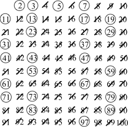

Like atoms making up molecules, prime numbers are the fundamental building blocks of the integers. In this section we see this in The Fundamental Theorem of Arithmetic, and explore some interesting statements prime numbers. We conclude the section with primality testing -- how to determine if a number is prime.
Subsection
Definition3.2.1.Prime Numbers.
A positive integer \(p\) is called prime if the only positive factors of \(p\) are \(1 \and p\) itself.
A positive integer which is not prime is called \(composite\)
The next logical question students ask is “what about 1?” because its only positive factors are 1 and itself. One is special.
Note3.2.2.1 is the loneliest number.
1 is neither prime nor composite. It’s called a unit.
Our next proposition, along with the proof that the square root of 2 is irrational, is the most classic example of a proof by contradiction. It’s hard (impossible?) to prove directly that there are infinitely many primes. Instead, we assume there are finitely many and then find a contradiction.
Because \(N\) is larger than the largest prime, \(p_n\text{,}\) we know that \(N\) isn’t in our list of primes and therefore is composite. Then there is some prime \(p_i\) that divides it.
But since \(p_i \divides N\) and \(p_i \divides p_1\cdot p_2\cdot p_3 \cdots p_n\text{,}\) we see that
But this is a contradiction since the only divisor of 1 is itself. Our assumption was incorrect, and therefore we conclude that there are infinitely many primes.
Over our school careers, we’ve been factoring numbers for a long time. You’ve probably noticed there is “a correct answer” when you produce a factorization. For example, we might write: \(15 = 3\cdot 5\) or \(15 = 5\cdot 3\text{,}\) these are the same factorization, we just changed the order we multiplied. The next theorem, which underlies all arithmetic, tells us we can factor every integer and that there is really a correct answer.
Theorem3.2.4.The Fundamental Theorem of Arithmetic.
Every integer greater than 1 can be written as a product of primes, and this product is unique up to the ordering of the prime factors.
The Fundamental Theorem of Arithmetic (FTA) is a non-constructive statement. It tells us that we can write every positive integer as a unique product of primes, but it doesn’t tell us how. Instead we need to use trial division and guess-and-check methods.
Here are factor trees for each of the examples. To construct these, we divide each number by some prime factor and successively divide the remaining factor further until we’re left with only prime factors.
Trying to determine the prime factors of an integer can be really time consuming, especially if a number is prime. Fortunately, the next theorem tells us just how far we have to check in order to test primality or find a prime divisor.
Theorem3.2.6.
If \(n\) is a positive composite number, then \(n\) has a prime divisor less than or equal to \(\sqrt{n}\text{.}\)
Example3.2.7.Brute Force Trial Division.
To determine if a number \(n\) is prime, one only needs to test all possible prime divisors up to \(\sqrt{n}\text{.}\)
Use trial division to determine that 251 is prime.
Since \(\sqrt{251} \approx 15.81\text{,}\) we only need to check prime numbers which are less than 15. These are \(2, 3, 5, 7, 11, 13\) Since none of these divide into 251 evenly, we conclude that 251 is prime.
Example3.2.8.
Use trial division to determine if any of the following are prime:
Since, \(\sqrt{127} \approx 11\text{,}\) we need only test primes up through 11. Noticing that none of 2, 3, 5, 7, or 11 divide evenly, we conclude 127 is prime.
Here, \(\sqrt{143} \approx 12\) so again we test only up through 11, the largest prime under 12.. We check that 2, 3, 5, 7 do not work but \(143 = 11\cdot 13\text{,}\) so we see that \(143\) is not a prime number.
For \(\sqrt{54323} \approx 233\text{,}\) meaning we need to check every prime less than 233. In order to solve this, let’s find a method to develop that list...
Example3.2.9.Sieve of Eratosthenes.
In order to generate a list of all prime numbers less than or equal to \(n\text{,}\) start with a tabular listing of integers from 1 to \(n\) we run the following sieve or filter:
Cross off the number 1.
Continuing until you reach \(\sqrt{n}\text{:}\)
Circle the next, non-crossed out number. It’s prime.
Cross out every multiple of this number.
Repeat.
Run the Sieve on this table of integers from 1 to 100.
Here is the completed table after running the sieve algorithm:

SubsectionComputer Corner - Implementing the Sieve
Implementing the step algorithm is very straight-forward.
Make a large list of integers
Delete 1
Delete every multiple of each prime we encounter
I’m choosing to implement this in Python in an inefficient, but readable way, so that we can run it in a Sage cell below. If you want to see it in your favorite language, you can find it implemented in many, many different languages on Rosetta Code 2
We can now return to determining if 54323 is prime. We now have a way of generating a list of primes up to \(\sqrt{54323}\text{,}\) and we can test primality by trial division. We put it all together in the following function is_it_prime:
ExercisesExercises
1.
Find the prime factorization of each of the following integers:
This question is of the form “if \(n\) is a prime number greater than three, then either \(n=6k+1\) or \(n=6k-1\) for some integer \(k\)”.
Proof.
(by contraposition). Assume that \(n\) is not a number of the form \(n=6k+1\) or \(n=6k-1\) for some integer \(k\text{.}\) This gives us four total cases:
Case 1: Assume \(n=6k\) for some integer \(k\text{.}\) Then \(n\) is not a prime number, since \(n\) is divisible by both 2 and 3.
Case 2: Assume \(n = 6k+2 = 2(3k+1)\) for some integer \(k\text{.}\) Then \(n\) is divisible by 2 and is hence not prime.
Case 3: assume \(n = 6k+3 = 3(2k+1)\) for some integer \(k\text{.}\) then \(n\) is divisible by 3 and is hence not prime.
Case 4: assume \(n = 6k+4 = 2(3k+2)\) for some integer \(k\text{.}\) then \(n\) is divisible by 2 and is hence not prime.
Thus if \(n\) is not of the form \(n=6k+1\) or \(n=6k-1\) for some integer \(k\text{,}\)\(n\) is not prime. By contraposition, if \(n\) is a prime greater than three then \(n\) is of the form either \(n=6k+1\) or \(n=6k-1\) for some integer \(k\text{.}\)
Our proof will go like this: factor \(n\) into three parts, \(p_1, p_2, \and b\) where \(p_1 \and p_2\) are prime and \(b\) is whatever is left with the factorization, such as \(10 = 2\cdot5\cdot1\) where \(b=1\) or \(60=2\cdot5\cdot6\) where \(b=6\text{,}\) but assuming those prime factors are bigger than \(\sqrt{n}\text{,}\) and look for the contradiction.
Proof.
Assume, to the contrary, that every prime divisor of \(n\) is greater than \(\sqrt{n}\text{.}\) Since \(n\) is composite, it has at least two prime factors, \(p_1, p_2\) so that \(n = p_1 p_2 b\) where \(b\) is some positive integer. But since \(p_1 \and p_2\) are a prime divisors of \(n\text{,}\) by our assumption, \(p_1 \gt \sqrt{n} \and p_2 \gt \sqrt{n}\text{.}\) So:
\begin{equation*}
n = p_1 p_2 b \gt \sqrt{n} \cdot \sqrt{n} \cdot b = nb
\end{equation*}
But since \(n\gt 1 \) and \(b\in \Z^+\text{,}\)\(n\gt nb\) is a contradiction. This means our original assumption, that every prime factor of \(n\) was greater than \(\sqrt{n}\) was wrong, and therefore we conclude that \(n\) has a prime factor less than \(\sqrt{n}\text{.}\)